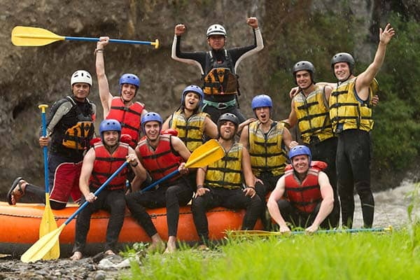
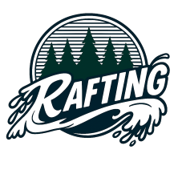
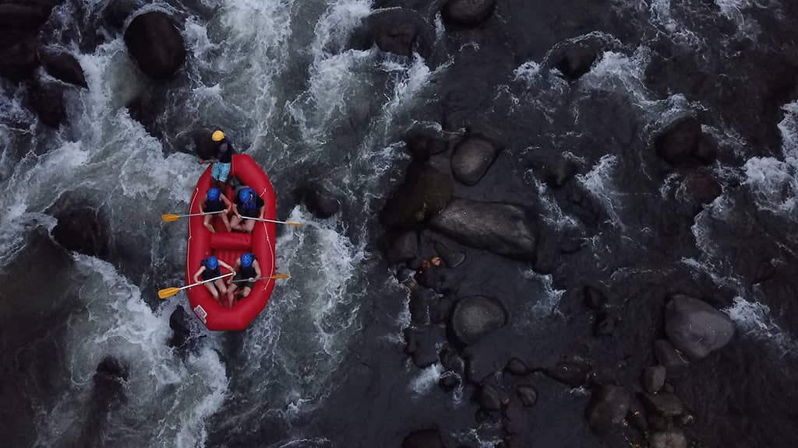
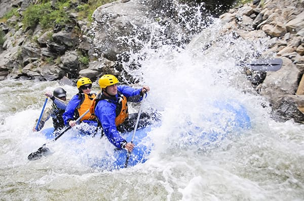
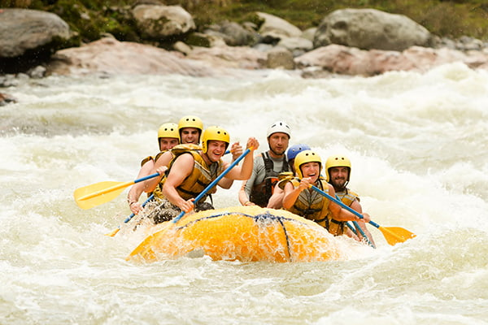

Na Mitchell River Adventures, nossa missão é proporcionar experiências inesquecíveis em contato com a natureza. Venha viver essa aventura conosco!



Na Mitchell River Adventures, nossa missão é proporcionar experiências inesquecíveis em contato com a natureza. Venha viver essa aventura conosco!
A Mitchell River Adventures nasceu da paixão pela natureza e pelos esportes de aventura. Nosso objetivo é compartilhar a emoção do rafting, proporcionando experiências seguras e inesquecíveis para pessoas de todas as idades.

